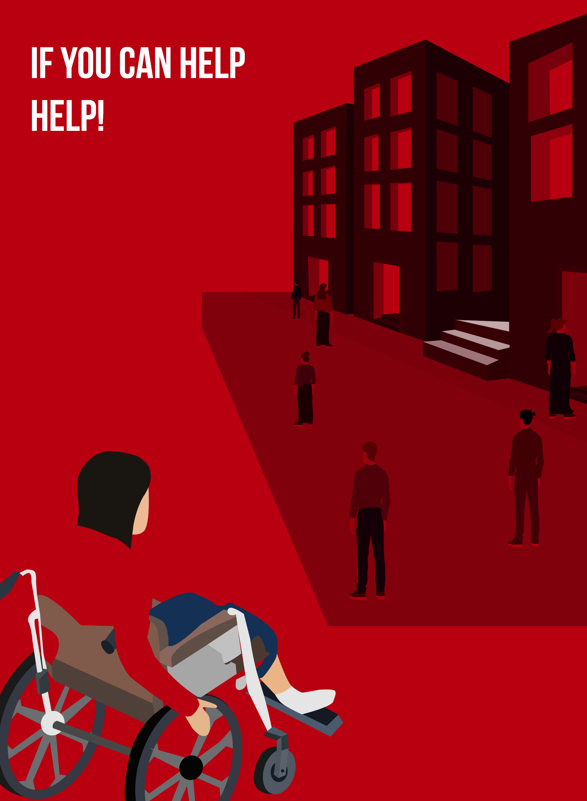

DISABLED
PEOPLE
IN SOCIETY
Projeto desenvolvido no âmbito de uma competição de design, com o objetivo de representar visualmente as dificuldades enfrentadas por pessoas que utilizam cadeira de rodas no seu dia a dia. Através da comunicação visual, o projeto pretende mostrar as barreiras físicas e sociais existentes, sensibilizando para a importância da acessibilidade e de uma sociedade mais inclusiva.
Informação
Tipo
Competição de Design
Ano
2024
Área
Design Gráfico
Sobre o Projeto
O projeto Disabled People in Society foi desenvolvido com o propósito de criar uma representação visual das dificuldades encontradas por pessoas com mobilidade reduzida. A proposta centra-se na experiência de um cadeirante, explorando as limitações provocadas por barreiras arquitetónicas e sociais presentes no quotidiano. Através do design gráfico, foi criada uma comunicação visual capaz de transmitir uma mensagem de sensibilização e reflexão sobre a acessibilidade e inclusão.
Conceito Criativo
O conceito visual do projeto foi desenvolvido a partir da ideia de mostrar uma perspetiva diferente da realidade de uma pessoa que utiliza cadeira de rodas. A composição gráfica procura representar obstáculos, limitações e desafios diários, transmitindo a necessidade de criar espaços e sociedades mais acessíveis. A mensagem principal passa pela reflexão sobre como pequenas barreiras podem influenciar significativamente a autonomia e a participação das pessoas.
Mensagem
Sensibilizar para as dificuldades de acessibilidade enfrentadas por cadeirantes.
Promover uma reflexão sobre inclusão e igualdade.
Processo de Desenvolvimento
O desenvolvimento do projeto passou por várias fases criativas,
desde a pesquisa inicial até à criação da proposta final.
Pesquisa
Análise das dificuldades enfrentadas por pessoas que utilizam cadeira de
rodas e recolha de referências visuais.
Conceito
Definição da mensagem principal e criação da ideia visual do projeto.
Desenvolvimento Gráfico
Criação dos elementos visuais, composição e tratamento de imagem.
Finalização
Ajustes finais da proposta gráfica e preparação do resultado final.
Ferramentas
Adobe Illustrator
Adobe Photoshop
Adobe XD
Resultado Final



Competências Desenvolvidas
O desenvolvimento deste projeto permitiu aprofundar conhecimentos na
área do design gráfico e da comunicação visual.
Design de Comunicação
Criação de uma mensagem visual com o objetivo de sensibilizar e
transmitir uma problemática social.
Composição Gráfica
Organização de elementos visuais, hierarquia de informação e equilíbrio
entre imagem e mensagem.
Edição e Tratamento de Imagem
Manipulação de imagens e criação de elementos gráficos através de
ferramentas digitais.
Conceção Visual
Desenvolvimento de uma ideia desde o conceito inicial até ao resultado
final.
Ferramentas Utilizadas
Adobe Illustrator
Adobe Photoshop
Adobe XD
Reflexão Final
O projeto Disabled People in Society permitiu explorar o design como uma ferramenta de comunicação e sensibilização social. Através da criação desta proposta visual foi possível compreender a importância de transmitir mensagens claras e impactantes, utilizando elementos gráficos capazes de gerar reflexão no público. Este trabalho contribuiu para o desenvolvimento da capacidade de criar soluções visuais com propósito, aliando criatividade, pesquisa e comunicação.